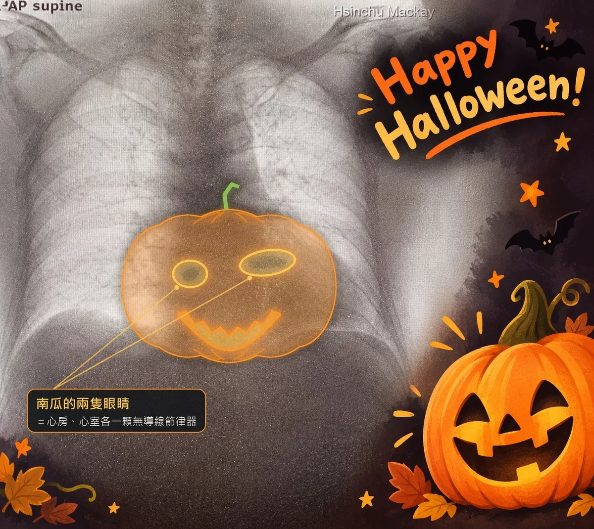

無導線心臟節律器，手照樣舉高高：萬聖節篇
本篇重點
裝無導線心臟節律器之後，手照樣可以舉高，術後不用限制手臂活動。它的傷口在大腿根部的穿刺處，胸前不用開刀；穿刺那一側的腿，術後依醫院指示休息就好。門診時，醫師會先看病人的心電圖是哪裡慢了，再和病人一起決定哪一種節律器比較適合。
萬聖節快到了，大家忙著挑面具、刻南瓜燈，想著怎麼把朋友嚇一跳。可是門診裡有一群人，最怕的是被自己的心臟嚇到：走著走著心跳突然慢下來，眼前一黑，差點站不穩。
心跳慢到需要節律器，過去幾乎都是裝傳統節律器。做法是在胸前鎖骨下方開一道約 3 到 4 公分的傷口（依個人狀況略有不同），在皮下做一個小口袋放電池，再經靜脈拉一條或兩條導線進心臟。它用了幾十年，是標準治療，救過很多人。只是裝完之後，生活會多一點小麻煩：術後一段時間，裝置那一側的手不能突然舉高過肩，不能提重物，也不能打球甩肩，多久要依醫院指示。胸口還摸得到一顆突起，背包肩帶、安全帶剛好壓在上面，就是不舒服。
無導線節律器換了個做法：電池和導線放在胸前會帶來麻煩，那就整顆放進心臟裡。它差不多一顆膠囊大小，醫師從大腿根部的靜脈放入導管，把它送進右心室，直接固定在心室壁上。

換成日常生活，差別很具體
- 胸口平平的，穿低領衣服、背包包、繫安全帶，都不會壓到什麼。
- 沒有導線，就沒有導線斷裂、磨損的問題；沒有皮下口袋，也就沒有口袋感染。
- 傷口在大腿根部的穿刺處，胸前不用開刀，術後不用限制手臂活動，掛萬聖節彩帶時手舉高也沒關係；穿刺那一側的腿，術後依醫院指示休息就好。
有三件事，一定要講清楚
- 它和傳統節律器一樣，都是經血管進到心臟的手術，心臟穿孔、出血這類風險兩種都有；無導線也有自己的風險，例如裝置位置不穩。術前我會一起說明。
- 要選對類型。心跳慢的原因不同，需要刺激的心腔就不同；現在無導線有心房型、心室型和雙腔系統，病竇症候群也能選照顧到心房的方案（能否申請健保，請向醫院確認）。
- 健保目前是有條件給付，要符合特定的心律問題，而且是傳統節律器裝不了的情況，經事前審查才可能核准；不符合條件的話，就需要自費。
所以門診時，我會先把病人的心電圖攤開，畫出來看是哪裡慢了，再一起決定哪一種比較適合您。
萬聖節要嚇人，交給南瓜燈和面具就好；心跳這件事，穩穩的就好。
一張表看懂
傳統節律器和無導線節律器在手術與日常生活上的差別如下。
| 項目 | 傳統節律器 | 無導線節律器 |
|---|---|---|
| 傷口位置 | 傷口在胸前鎖骨下方，約 3 到 4 公分，依個人狀況略有不同。 | 傷口在大腿根部的穿刺處，胸前不用開刀。 |
| 裝置放置方式 | 電池放在皮下的小口袋，再經靜脈拉一條或兩條導線進心臟。 | 整顆差不多一顆膠囊大小，經大腿根部的靜脈送進右心室，固定在心室壁上。 |
| 術後手臂活動 | 術後一段時間，裝置那一側的手不能突然舉高過肩，多久要依醫院指示。 | 術後不用限制手臂活動，穿刺那一側的腿依醫院指示休息就好。 |
| 胸口感覺 | 胸口摸得到一顆突起，背包肩帶和安全帶剛好壓在上面會不舒服。 | 胸口平平的，背包包和繫安全帶都不會壓到什麼。 |
| 手術風險 | 這是經血管進到心臟的手術，有心臟穿孔、出血這類風險。 | 同樣有心臟穿孔、出血這類風險，也有自己的風險，例如裝置位置不穩。 |
常見問題
裝無導線節律器後手可以舉高嗎？
無導線節律器的傷口在大腿根部的穿刺處，胸前不用開刀，術後不用限制手臂活動。穿刺那一側的腿，術後依醫院指示休息就好。
無導線節律器手術有哪些風險？
無導線節律器和傳統節律器一樣，都是經血管進到心臟的手術，心臟穿孔、出血等風險兩種都有。無導線節律器也有自己的風險，例如裝置位置不穩。
無導線節律器健保有給付嗎？
無導線節律器的健保目前是有條件給付，要符合特定的心律問題，而且是傳統節律器裝不了的情況，經事前審查才可能核准；不符合條件的話，就需要自費。

參考資料
- 健保署：全民健康保險特殊材料給付規定（B101-3 無導線心律調節器、B101-4 雙腔無導線心律調節器）
- 歐洲心臟學會 2021 心臟節律器與再同步治療指引（Eur Heart J 2021;42:3427）
- 細爪固定型無導線節律器取出：歐洲 11 中心 85 人（Europace 2026）
每個人的狀況不同，文章不能取代門診評估。想知道自己適不適合，歡迎帶著過去的檢查報告來門診討論。